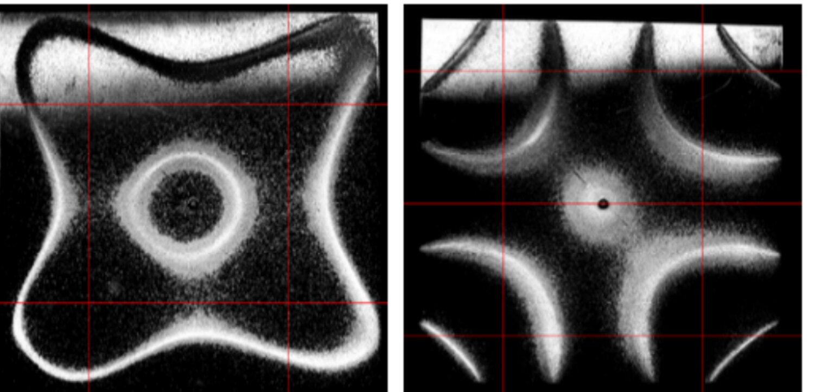
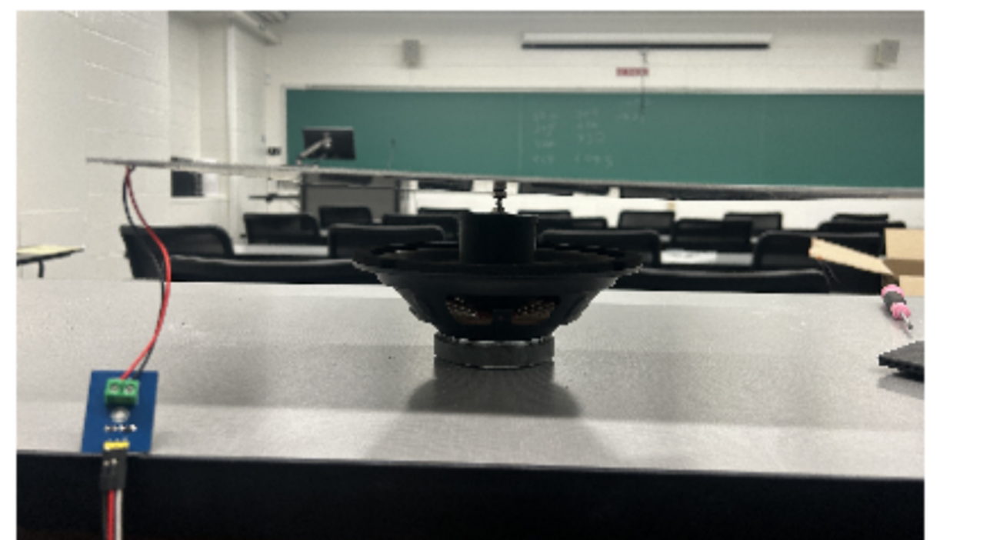
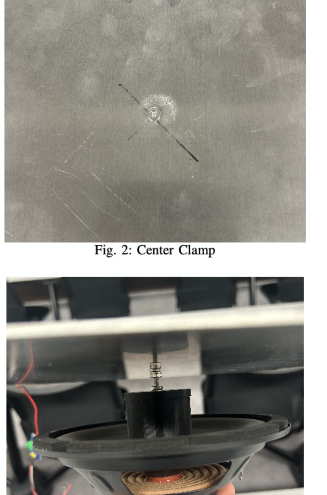
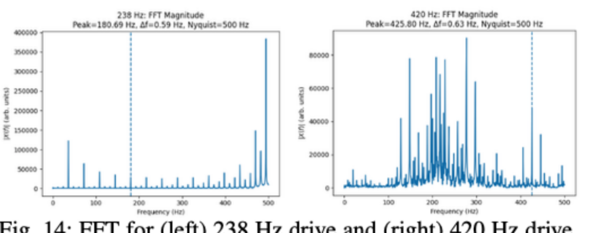
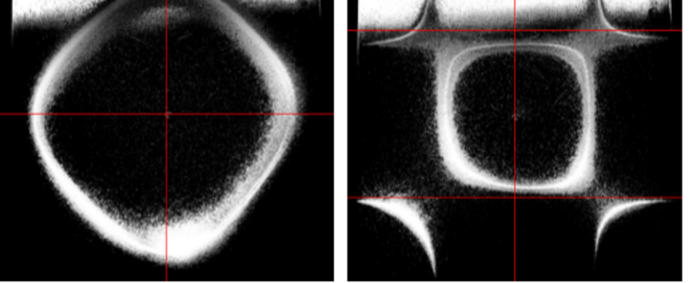
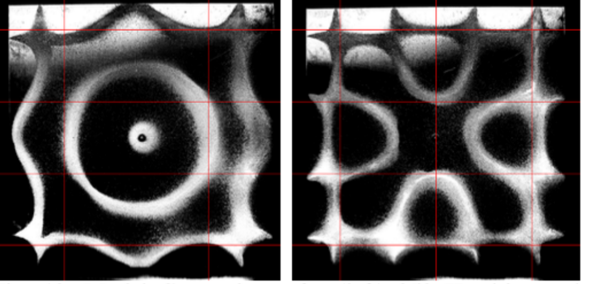

Chladni patterns: modal characterization of a clamped plate
Driving an aluminum plate through resonance, reading the modes two ways — from sand on the surface and from FFT of a piezoelectric sensor — and finding where thin-plate theory stops describing a real clamped plate.

Problem
A driven elastic plate has resonances where it stores vibrational energy efficiently, and at each one the surface settles into a standing wave with stationary nodal lines. Classical thin-plate theory predicts those frequencies and mode shapes from geometry and material properties alone — under assumptions that a real plate violates. This experiment set out to measure the modes, compare them against theory, and quantify where the assumptions break down.
Setup
A square 6061-T6 aluminum plate, 0.203 m on a side and 3.18 mm thick, bolted at its center to a speaker coil through a 3D-printed coupling cylinder. The center clamp enforces a local zero-displacement condition and mechanically couples the plate to the driver. Fine sand spread across the top surface makes the nodal pattern visible; a piezoelectric sensor on the underside produces a voltage proportional to local strain, recorded through CoolTerm for frequency-domain analysis.


With E = 6.90 × 1010 Pa, ρ = 2700 kg/m3 and ν = 0.33, the flexural rigidity works out to 2.06 × 102 N·m and the frequency constant to 41.8 Hz, giving an uncorrected fundamental of 83.6 Hz. The measured fundamental was 98 Hz, so we introduced an empirical correction factor of 1.17 to account for the center clamp and applied it to the higher-order predictions.

Results
Six modes were identified by counting nodal lines in the sand pattern and matching against theoretical mode shapes.
| Theoretical (Hz) | Driving (Hz) | FFT-derived (Hz) | Mode (m,n) | Error |
|---|---|---|---|---|
| 98 | 98 | 84.9 | (1,1) | 13.4% |
| 245 | 238 | 180.7 | (1,2) / (2,1) | 26.2% |
| 392 | 420 | 425.8 | (2,2) | 8.6% |
| 637 | 583 | 645.8 | (2,3) / (3,2) | 1.4% |
| 980 | 950 | 717.7 | (2,4) / (4,2) | 26.8% |
| 1225 | 1172 | 1140.3 | (3,4) / (4,3) | 6.9% |
Agreement is uneven in a way worth taking seriously: 1.4% at the (2,3) mode and 26.8% at (2,4). The two worst cases are both ones where the FFT-derived frequency falls well below both the theoretical and the driving frequency, which suggests the dominant spectral peak belongs to a nearby structural resonance of the coupled plate-and-driver system rather than the plate mode we were trying to excite.


Where the error comes from
Finite FFT resolution and background noise set a floor, but the larger contributors are physical. Driving through a bolted center clamp introduces nonlinear dynamics and local curvature near the clamp, and the clamp itself transmits forces the thin-plate model does not include. Waveform distortion and sensor saturation show up as harmonics in the spectra. And the empirical correction factor is fit to the fundamental, so it carries whatever that single measurement got wrong into every higher-order prediction.
What I’d do next
Replacing the single empirical correction with a model that treats the clamp as a boundary condition rather than a scalar fudge would be the biggest improvement. Beyond that, driving the plate without direct contact would separate the plate’s modes from the coupled system’s, which is what the two 26% errors appear to be measuring.
- Course
- ME Laboratory, Mechanics & Applied Physics
- Team
- Kristina Dee, Tira Zhao
- Specimen
- 6061-T6 Al, 203 × 203 × 3.18 mm
- Tools
- Piezoelectric sensor, CoolTerm, FFT analysis